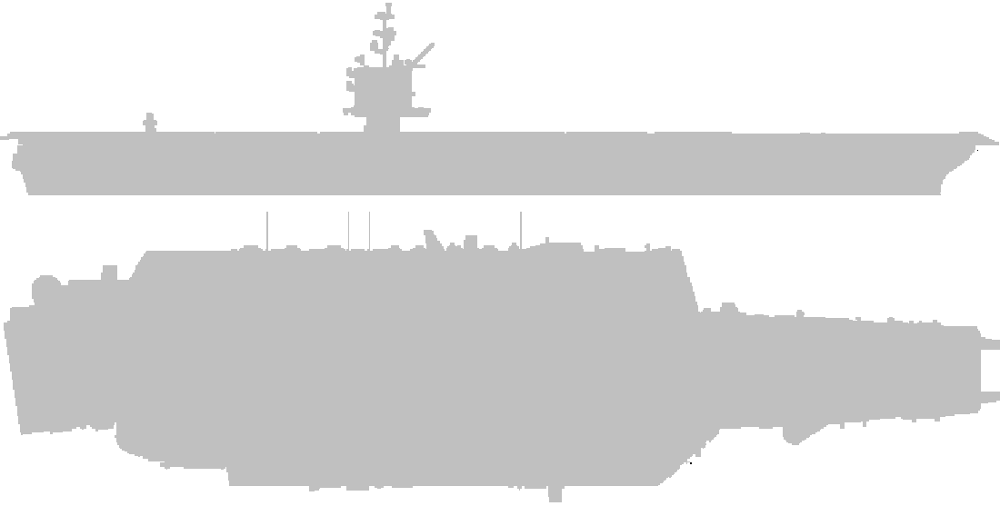

0
U.S.S Enterprise CV-6
CV-6 企业号航空母舰
-
服役时间
1938年5月12日 - 1947年2月17日
-
级别
约克城级航空母舰 (Yorktown-class)
-
排水量
满载 25,500 吨
-
动力
蒸汽轮机 (120,000 轴马力)
-
人员
2,217 官兵
-
载机
90 架
U.S.S Enterprise CVN-65
CNV-65 企业号核动力航空母舰

-
服役时间
1961年11月25日 - 2012年12月1日
-
级别
企业级核动力航空母舰 (Enterprise-class)
-
排水量
满载 94,780 吨
-
动力
A2W 核反应堆 * 2 (280,000 轴马力)
-
人员
5000 (舰船 3000 + 航空 1800)
-
载机
60 架
Space Shuttle Enterprise OV-101
企业号航天飞机
-
类型
第一架航天飞机
-
用途
用于 NASA ALT 返回及着陆测试
-
首次飞行
1977年2月18日
-
首次自由飞行
1977年8月12日
-
最后自由飞行
1977年10月26日
-
最后飞行
2012年4月27日
-
自由飞行次数
5
-
自由飞行时长累计
19 分钟
U.S.S Enterprise NCC-1701
NCC-1701 企业号星舰
-
首飞
2245年
-
级别
宪法级星舰 (Constitution-class)
-
速度
六级曲速
-
极限速度
九级曲速
-
武器
光子鱼雷，相位炮
-
动力
脉冲引擎，曲速引擎
U.S.S Enterprise Forever
永远的企业号